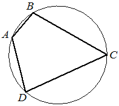
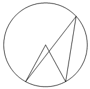
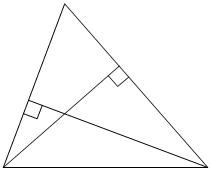
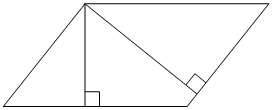
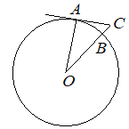
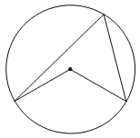
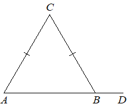
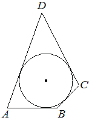

1. Впишите правильный ответ.
В треугольнике ABC угол C равен 90°. AB = 10, BC =√19. Найдите cosA.

В треугольнике ABC угол C равен 90°. AB = 10, BC =√19. Найдите cosA.
Отрезки AC и BD - диаметры окружности с центром O. Угол ACB равен 41°. Найдите величину угла AOD. Ответ дайте в градусах.

В треугольнике ABC угол C равен 90°. AB = 10, AC =√51. Найдите sinA.

Найдите величину угла ACO, если его сторона CA касается окружности с центром O, отрезок CO пересекает окружность в точке B (см. рисунок), а дуга AB окружности, заключённая внутри этого угла, равна 66°. Ответ дайте в градусах.

В треугольнике ABC угол C равен 90°. AB = 10, AC =√91. Найдите sinA.
Четырёхугольник ABCD вписан в окружность. Угол ABC равен 103°, угол CAD равен 42°. Найдите угол ABD. Ответ дайте в градусах.

Четырёхугольник ABCD вписан в окружность. Угол ABD равен 61° , угол CAD равен 37° . Найдите угол ABC . Ответ дайте в градусах.
В треугольнике ABC угол C равен 90°. AB = 5, BC = 4. Найдите cosA.

Отрезки AC и BD — диаметры окружности с центром O. Угол ACB равен 59°. Найдите угол AOD. Ответ дайте в градусах.

В треугольнике ABC сторона AB равна 3√2, угол C равен 135°. Найдите радиус описанной около этого треугольника окружности.

Два угла вписанного в окружность четырехугольника равны 59° и 102°. Найдите больший из оставшихся углов. Ответ дайте в градусах.

Четырёхугольник ABCD вписан в окружность. Угол ABC равен 120°, угол ABD равен 43°. Найдите угол CAD. Ответ дайте в градусах.

Отрезки AC и BD — диаметры окружности с центром O. Угол AOD равен 16°. Найдите угол ACB. Ответ дайте в градусах.
Четырёхугольник ABCD вписан в окружность. Угол ABC равен 98°, угол CAD равен 44°. Найдите угол ABD. Ответ дайте в градусах.
Площадь параллелограмма ABCD равна 28. Точка E — середина стороны AD. Найдите площадь трапеции BCDE.

Площадь треугольника ABC равна 24, DE - средняя линия, параллельная стороне AB. Найдите площадь трапеции ABED

Четырёхугольник ABCD вписан в окружность. Угол BAD равен 136°. Найдите угол BCD. Ответ дайте в градусах.
Четырёхугольник ABCD вписан в окружность. Угол ABD равен 62°, угол CAD равен 41°. Найдите угол ABC. Ответ дайте в градусах.
Площадь параллелограмма ABCD равна 24. Точка E — середина стороны AD. Найдите площадь трапеции BCDE
Острый угол B прямоугольного треугольника ABC равен 21°. Найдите величину угла между биссектрисой CD и медианой CM, проведёнными из вершины прямого угла C. Ответ дайте в градусах.

Найдите центральный угол, если он на 28° больше острого вписанного угла, опирающегося на ту же дугу. Ответ дайте в градусах.
Две стороны треугольника равны 15 и 18. Высота, опущенная на большую из этих сторон, равна 10. Найдите длину высоты, опущенной на меньшую из этих сторон треугольника.
Две стороны треугольника равны 21 и 28. Высота, опущенная на бо́льшую из этих сторон, равна 15. Найдите высоту, опущенную на меньшую из этих сторон треугольника.
Отрезки AC и BD — диаметры окружности с центром O. Угол ACB равен 32°. Найдите угол AOD. Ответ дайте в градусах.
Два угла вписанного в окружность четырёхугольника равны 99 и 117. Найдите бо́льший из оставшихся углов. Ответ дайте в градусах.
Стороны параллелограмма равны 18 и 20. Высота, опущенная на меньшую из этих сторон, равна 10. Найдите длину высоты, опущенной на большую сторону параллелограмма.
Площадь треугольника ABC равна 24, DE — средняя линия, параллельная стороне AB. Найдите площадь треугольника CDE.
Отрезки AC и BD — диаметры окружности с центром O. Угол ACB равен 61°. Найдите угол AOD. Ответ дайте в градусах.
Угол ACO равен 57°. Его сторона CA касается окружности с центром в точке O. Отрезок CO пересекает окружность в точке B (см. рисунок). Найдите градусную меру дуги AB окружности, заключённой внутри этого угла. Ответ дайте в градусах.
Найдите угол ACO, если его сторона CA касается окружности с центром O, отрезок CO пересекает окружность в точке B (см. рис.), а дуга AB окружности, заключённая внутри этого угла, равна 17° . Ответ дайте в градусах.
Стороны параллелограмма равны 24 и 27. Высота, опущенная на меньшую из этих сторон, равна 18. Найдите высоту, опущенную на большую сторону параллелограмма.
Центральный угол на 32° больше острого вписанного угла, опирающегося на ту же дугу окружности. Найдите вписанный угол. Ответ дайте в градусах
Найдите величину центрального угла, если он на 69° больше острого вписанного угла, опирающегося на ту же дугу. Ответ дайте в градусах.
В треугольнике ABC стороны AC и BC равны. Внешний угол при вершине B равен 107°. Найдите угол C. Ответ дайте в градусах.
Отрезки AC и BD — диаметры окружности с центром O. Угол AOD равен 114°. Найдите величину вписанного угла ACB. Ответ дайте в градусах.
Отрезки AC и BD — диаметры окружности с центром O. Угол AOD равен 130°. Найдите величину вписанного угла ACB. Ответ дайте в градусах.
Центральный угол на 29° больше острого вписанного угла, опирающегося на ту же дугу окружности. Найдите величину вписанного угла. Ответ дайте в градусах.
Четырёхугольник ABCD вписан в окружность. Угол ABD равен 58°, угол CAD равен 39°. Найдите угол ABC. Ответ дайте в градусах.
Площадь параллелограмма ABCD равна 60. Точка E — середина стороны AD. Найдите площадь треугольника ABE.
Угол ACO равен 62°. Его сторона CA касается окружности с центром в точке O. Отрезок CO пересекает окружность в точке B (см. рис.). Найдите градусную меру дуги AB окружности, заключённой внутри этого угла. Ответ дайте в градусах.
В четырёхугольник ABCD вписана окружность, AB=10, CD=17. Найдите периметр четырёхугольника ABCD.
Площадь треугольника ABC равна 60, DE — средняя линия, параллельная стороне AB. Найдите площадь трапеции ABED.
В треугольник ABC сторона AB равна 2√3, угол C равен 120°. Найдите радиус описанной окружности.